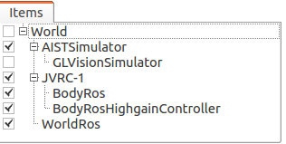

Choreonoid ROSプラグインチュートリアル¶
設定済みのプロジェクトを開く¶
このチュートリアル用に準備されたプロジェクトファイルを開きます。
$ roslaunch choreonoid_ros jvrc-1-rviz.launch
実行に成功するとJVRC O1タスクが rvizによるビジュアライゼーションつきで立ち上がります。
注釈
設定済みのプロジェクトは、順動力学モードを使用する設定で作成しています。
ROSユーティリティコマンドを使ってメッセージをモニタする¶
トピックの一覧を表示する:
$ rostopic list
力センサの入力を表示する:
$ rostopic echo /JVRC_1/lfsensor
カメラ画像を表示する（image-viewパッケージを利用）
$ sudo apt-get install ros-$ROS_DISTRO-image-view
$ rosrun image_view image_view image:=/JVRC_1/rcamera/image_raw
ROSユーティリティコマンドを使ってシミュレーションを制御する¶
シミュレーションを一時停止する:
$ rosservice call /choreonoid/pause_physics
一時停止したシミュレーションを再開する:
$ rosservice call /choreonoid/unpause_physics
Pythonスクリプトを利用してロボットを動かす¶
以下の例 (test-torque-control-jvrc1.py) は、JVRC-1ロボットの任意の関節に角度設定コマンドを送ります。
#!/usr/bin/env python
#
#
import sys
import os
import math
import rospy
from trajectory_msgs.msg import JointTrajectory, JointTrajectoryPoint
#
# Functions.
#
#
def publish_jvrc1_jointtrajectory(jname='NECK_Y', jdegree=0):
rad = float('{0:.4f}'.format(math.radians(float(jdegree))))
pub = rospy.Publisher('/JVRC_1/torque_control/set_joint_trajectory', JointTrajectory, latch=True, queue_size=10)
rospy.init_node('jvrc1_choreonoid_ros_test', anonymous=True)
msg = JointTrajectory()
msg.joint_names = [ jname ]
msg.points = []
p = JointTrajectoryPoint()
p.time_from_start = rospy.rostime.Duration(0)
p.positions = [ rad ]
msg.points.append(p)
rospy.loginfo(msg)
pub.publish(msg)
rospy.Rate(1).sleep()
#
def check_jvrc1_joint_name(jname=''):
names = {
'R_HIP_P': 0, 'R_HIP_R': 0, 'R_HIP_Y': 0, 'R_KNEE': 0, 'R_ANKLE_R': 0,
'R_ANKLE_P': 0, 'L_HIP_P': 0, 'L_HIP_R': 0, 'L_HIP_Y': 0, 'L_KNEE': 0,
'L_ANKLE_R': 0, 'L_ANKLE_P': 0, 'WAIST_Y': 0, 'WAIST_P': 0, 'WAIST_R': 0,
'NECK_Y': 0, 'NECK_R': 0, 'NECK_P': 0, 'R_SHOULDER_P': 0, 'R_SHOULDER_R': 0,
'R_SHOULDER_Y': 0, 'R_ELBOW_P': 0, 'R_ELBOW_Y': 0, 'R_WRIST_R': 0, 'R_WRIST_Y': 0,
'R_UTHUMB': 0, 'R_LTHUMB': 0, 'R_UINDEX': 0, 'R_LINDEX': 0, 'R_ULITTLE': 0,
'R_LLITTLE': 0, 'L_SHOULDER_P': 0, 'L_SHOULDER_R': 0, 'L_SHOULDER_Y': 0, 'L_ELBOW_P': 0,
'L_ELBOW_Y': 0, 'L_WRIST_R': 0, 'L_WRIST_Y': 0, 'L_UTHUMB': 0, 'L_LTHUMB': 0,
'L_UINDEX': 0, 'L_LINDEX': 0, 'L_ULITTLE': 0, 'L_LLITTLE': 0
}
return jname in names
#
def usage():
name = os.path.basename(sys.argv[0])
print 'usage: ' + name + ' [joint name] [joint angle (degree)]'
print ''
print 'Set joint angle for JVRC-1 robot.'
print ''
print '[joint name] setting choose one of them:'
print ' R_HIP_P R_HIP_R R_HIP_Y R_KNEE R_ANKLE_R,'
print ' R_ANKLE_P L_HIP_P L_HIP_R L_HIP_Y L_KNEE'
print ' L_ANKLE_R L_ANKLE_P WAIST_Y WAIST_P WAIST_R'
print ' NECK_Y NECK_R NECK_P R_SHOULDER_P R_SHOULDER_R'
print ' R_SHOULDER_Y R_ELBOW_P R_ELBOW_Y R_WRIST_R R_WRIST_Y'
print ' R_UTHUMB R_LTHUMB R_UINDEX R_LINDEX R_ULITTLE'
print ' R_LLITTLE L_SHOULDER_P L_SHOULDER_R L_SHOULDER_Y L_ELBOW_P'
print ' L_ELBOW_Y L_WRIST_R L_WRIST_Y L_UTHUMB L_LTHUMB'
print ' L_UINDEX L_LINDEX L_ULITTLE L_LLITTLE'
print ''
print '[joint angle] setting is range from 360.0 to -360.0.'
print ''
print 'e.g. if you want to change the joint angle of the NECK_Y to dgree of 40.'
print ' ' + name + ' NECK_Y 40.0'
print ''
return
#
# Main.
#
if __name__ == '__main__':
is_error = True
try:
if len(sys.argv) == 3:
s = sys.argv[1]
f = float(sys.argv[2])
if (check_jvrc1_joint_name(s) and (f <= 360.0 and f >= -360.0)):
publish_jvrc1_jointtrajectory(jname=s, jdegree=f)
is_error = False
except ValueError:
pass
except rospy.ROSInterruptException:
pass
if (is_error):
usage()
sys.exit(1)
sys.exit(0)
このスクリプトは ~/catkin_ws/install/share/choreonoid_plugins/test 以下に収めています。
スクリプトは以下の手順で実行します。
このチュートリアル用に準備されたプロジェクトファイルを開きます。
$ roslaunch choreonoid_ros jvrc-1-rviz.launch
新しい端末を起動します。
例えば、ロボットの首を45°回す場合。以下のコマンドを実行します。
$ rosrun choreonoid_plugins test-torque-control-jvrc1.py NECK_Y 45.0
Pythonスクリプトを利用してモデルファイルをロードする¶
以下の例 (test-model-spawn.py) は、現在のシミュレーション上にboxモデルを動的にロードします。
#!/usr/bin/env python
import time
import rospy
from gazebo_msgs.srv import SpawnModel
from gazebo_msgs.srv import DeleteModel
from geometry_msgs.msg import Pose
ns = '/choreonoid/'
def modelspawn(name, fname, pose):
f = open(fname,'r')
model_xml = f.read()
rospy.wait_for_service(ns + 'spawn_vrml_model')
try:
spawnsrv = rospy.ServiceProxy(ns + 'spawn_vrml_model', SpawnModel)
spawnsrv(name, model_xml, name, pose, None)
except rospy.ServiceException, e:
print "Service call failed %s" % e
def modeldelete(name):
rospy.wait_for_service(ns + 'delete_model')
try:
deletesrv = rospy.ServiceProxy(ns + 'delete_model', DeleteModel)
deletesrv(name)
except rospy.ServiceException, e:
print "Service call failed %s" % e
if __name__ == '__main__':
print "spawn model"
modelspawn("test", "/usr/share/OpenHRP-3.1/sample/model/box.wrl", Pose())
time.sleep(10)
print "delete model"
modeldelete("test")
このスクリプトは ~/catkin_ws/install/share/choreonoid_plugins/test 以下に収めています。
スクリプトは以下の手順で実行します。
このチュートリアル用に準備されたプロジェクトファイルを開きます。
$ roslaunch choreonoid_ros jvrc-1-rviz.launch
新しい端末を起動します。
以下のコマンドを実行します。
$ rosrun choreonoid_plugins test-model-spawn.py
カスタムプロジェクトの作成¶
プロジェクトファイルは自身で作成する事も可能です。
プロジェクトファイルは以下の手順で作成します:
Worldアイテムを作成し、モデルデータを開くことでBodyアイテムも作成します。
AISTSimulatorアイテムを作成し、順動力学モードもしくは、ハイゲインモードに設定します。
もしくは
（任意）画像入力が必要な場合はViewSimulatorアイテムをAISTSimulatorアイテムの下に作成します。
操作するBody アイテムの下に、BodyRosアイテムを作成します。
操作するBodyアイテムの下に、BodyRosTorqueController アイテム (順動力学モードの場合) もしくは、BodyRosHighgainController アイテム (ハイゲインモードの場合) を作成します。
Worldアイテムの下にWorldRosアイテムを作成します。
上記の設定を行うと、アイテムビューは以下のような構造になります。

もしくは
BodyRosTorqueController アイテムを選択した場合、制御パラメータの設定を実施する必要があります：
任意のファイル名で制御パラメータファイルを用意します。ファイルは YAML フォーマットで記述する必要があります。
$ gedit ~/my-robot-pdc-parameters.yaml
YAML フォーマットの詳細については http://yaml.org/ を参照してください。
制御パラメータファイルを編集します。必要なパラメータは pgain と dgain と u_lower と u_upper です。また、各パラメータはロボットの関節数と一致するように記述する必要があります。
記述例：
pgain: [ 3000.0, 3000.0, 3000.0, ... ] dgain: [ 100.0, 100.0, 100.0, ... ] u_lower: [ -20.0, -20.0, -20.0, ... ] u_upper: [ 20.0, 20.0, 20.0, ... ]
JVRC-1 向けの制御パラメータファイル (jvrc1-pdc-parameters.yml) を ~/catkin_ws/install/share/choreonoid_plugins/test ディレクトリ以下に収めています。記述サンプルとして参照してください。
用意した制御パラメータファイルを BodyRosTorqueController アイテムへセットします。

注釈
~ を使用した表記は使用できません。絶対パス表記を使用してください。
roscore を起動していない場合、別の端末で roscore を起動します。
$ roscore
最後に「シミュレーション開始」ボタンを押すとROS接続機能が有効になります。